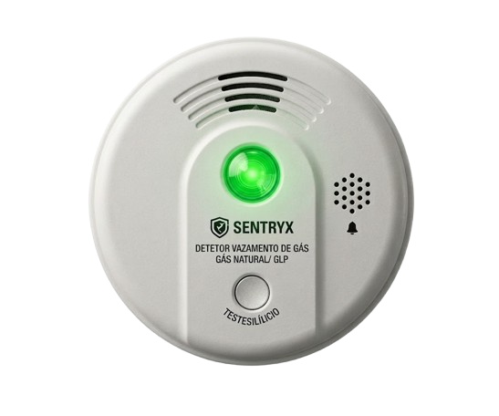
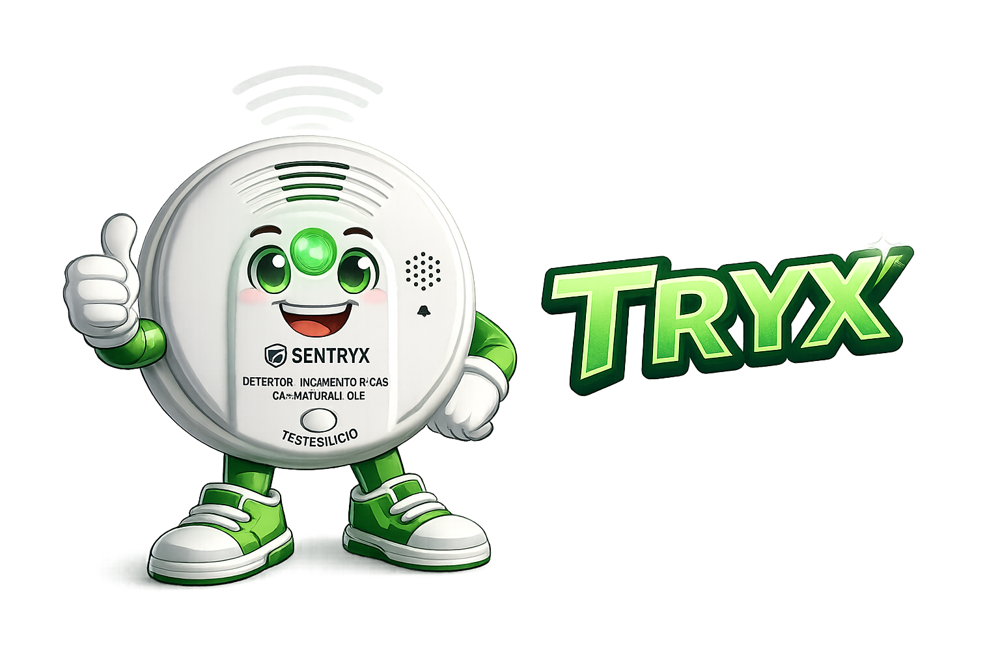

Vazamentos de gás são invisíveis, mas os riscos são reais. A SENTRYX detecta sinais antes que se tornem perigosos, oferecendo monitoramento contínuo e alertas imediatos para garantir mais segurança no seu dia a dia.

Ideal para padarias, mercados, mercearias e outros pequenos estabelecimentos que precisam de mais segurança no ambiente.
Perfeito para casas e apartamentos, ajudando famílias a terem mais tranquilidade, proteção e resposta rápida em situações de risco.
Uma solução eficiente para ambientes com uso intenso de gás, oferecendo mais controle, prevenção e segurança operacional.
nossa IA oficial!
A TRYX atua como uma assistente inteligente dentro do ecossistema SENTRYX, auxiliando no envio de notificações em tempo real diante de alertas de vazamento de gás e na gestão do histórico de eventos. Com isso, o usuário pode visualizar registros anteriores, acompanhar padrões de risco e tomar decisões com mais rapidez, segurança e eficiência.
Ela é a voz amiga da SENTRYX: uma companheira acessível, simpática, compartilhadora das ideias da inovação, à pronta para sua jornada.

Experimente a TRYX e compartilhe da mesma emoção
Se identifica com nosso produto e gostaria de contribuir?